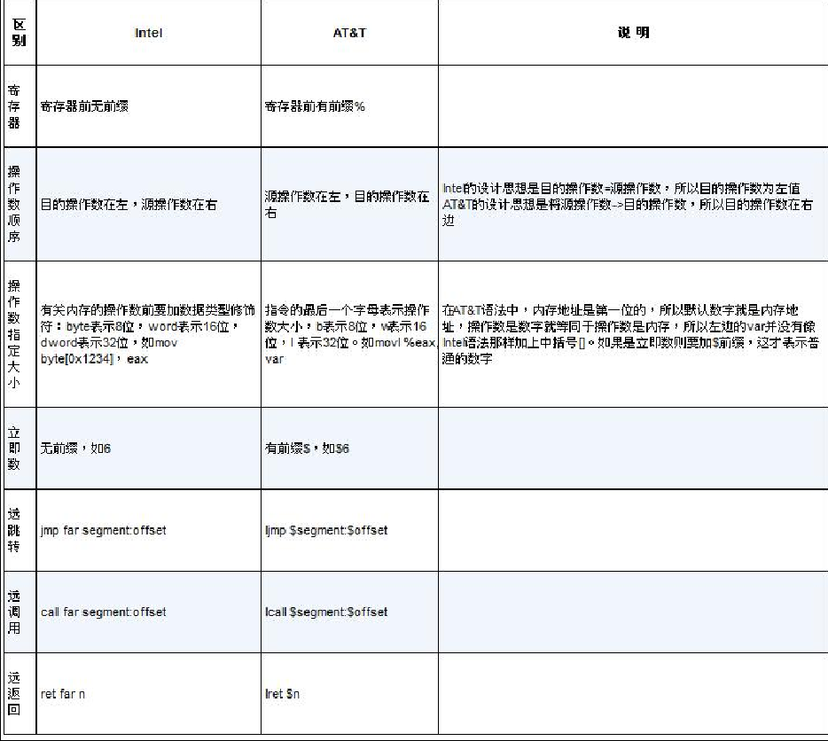

内联汇编
AT&T
Linux内核中的汇编代码一般都是AT&T语法

AT&T语法中，如果想要表示内存地址，则什么都不需要加，寄存器前加 %，如果想要表示立即数，需要在数字前面加$。
AT&T内存寻址：base_address(offset_address,index,size) –> base_address+offset_address+index*size
- base_address: 基地址
- offset_address: 偏移地址，index是索引值，这两个必须是8个寄存器之一
- size：长度，只能是1/2/4/8
寻址方式：
- 直接寻址：只有base_address项，如movl $255, 0xc00008F0
- 寄存器间接寻址: 只有offset_address项，只能是通用寄存器，格式是(offset_address)，mov (%eax), %ebx
- 寄存器相对寻址：有offset_address和base_address, 格式是base_address(offset_address), movb -4(%ebx) %al，即将地址（ebx-4）所指向的内容复制1字节到寄存器al
- 变址寻址：只有index和size就行，也可以有别的
基本内联汇编
格式：
asm [volatile] ("assembly code")，各关键字之间可以用空格或制表符分隔，也可以紧凑一起不分隔
asm 与 _asm_等价，由gcc定义的宏：#define _asm_ asm。
volatile 等价于 _volatile_，可选项，告诉gcc不要修改自己的汇编代码
"assembly code"是写的汇编代码，可以为空，即asm [volatile] ("")，其规则如下：
（1）指令必须用双引号引起来，无论双引号中是一条指令或多条指令。
（2）一对双引号不能跨行，如果跨行需要在结尾用反斜杠’'转义。
（3）指令之间用分号’；’或换行符’\n’或换行符加制表符’\n’’\t’分隔。
1 | asm("movl $9,%eax;""pushl %eax") 正确 |
内联汇编中，操作数的顺序与之前相反，mov 源操作数 目的操作数
拓展内联汇编
1 | asm [volatile] ("assembly code":output : input : clobber/modify) |
input: 输入参数；output: 存储地址
clobber/modify是通知，即如果汇编代码执行后会破坏一些内存或寄存器资源，就会通知编译器
例子：
1 | //基本内联汇编 |
in_a和in_b是在input部分中输入的，用约束名a为c变量in_a指定了用寄存器eax，用约束名b为c变量in_b指定了用寄存器ebx。addl指令的结果存放到了寄存器eax中，在output中用约束名a指定了把寄存器eax的值存储到c变量out_sum中。output中的’=’号是操作数类型修饰符，表示只写，其实就是out_sum=eax的意思。
机器模式
寄存器按是否可单独使用，可分成几个部分，拿eax举例：
- 低部分的一字节：al
- 高部分的一字节：ah
- 两字节部分：ax
- 四字节部分：eax
h：输出寄存器高位部分中的那一字节对应的寄存器名称，如ah、bh、ch、dh。
b：输出寄存器中低部分1字节对应的名称，如al、bl、cl、d1。
w：输出寄存器中大小为2个字节对应的部分，如ax、bx、ex、dx。
k：输出寄存器的四字节部分，如eax、ebx、ecx、edx。 参考资料
- 本文标题：操作系统真相还原Ch6-2
- 本文作者：Kevin Wang
- 创建时间：2021-11-06 12:18:34
- 本文链接：https://wkunblog.com/2021/11/06/操作系统真相还原Ch6-2/
- 版权声明：本博客所有文章除特别声明外，均采用 BY-NC-SA 许可协议。转载请注明出处！